写在前面：本篇主要是对网上的内容做了整理，自留资料，因此有大部分与其他文章重合，参考文章均注释在最后，如有冒犯请联系cugliyue@163.com，将及时删除。
一.准备工作
1.配置Node.js环境
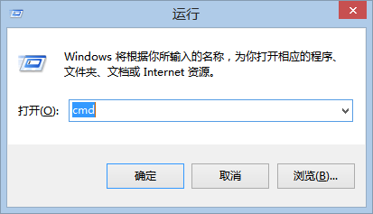
- 在命令行输入
node -v、npm -v，得到如下结果说明安装成功。
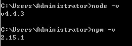
2.配置git环境
- 下载git安装文件（64位），大部分设置保持默认，但注意PATH选项，如下图。
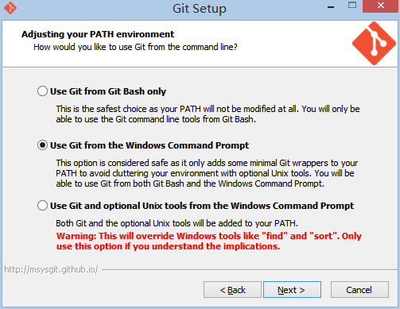
出于安全考虑，只有在Git Bash中才能进行Git的相关操作。按照上图进行的选择，将会使得Git安装程序在系统PATH中加入Git的相关路径，使得你可以在CMD界面下调用Git，不用打开Git Bash了。
- 检查是否安装成功，打开命令行，输入
git --version，如下图则安装正确。
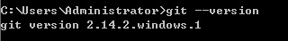
3.安装hexo
3.1配置hexo
- 选择一合适位置创建文件夹，此处我创建的文件夹名为blog。进入文件夹，在文件夹空白处按住Shift+鼠标右键，则在当前目录打开命令行。（下文中用在当前目录打开命令行指代以上操作）
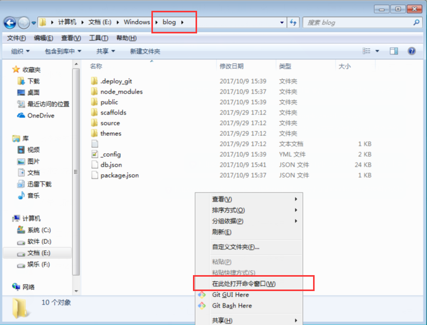 - 输入命令
1.npm install -g hexo-cli
-g参数要求全局安装，可以直接在命令行里使用hexo命令2.npm install hexo-deployer-git --save
安装hexo git提交插件，用于将内容提交到github上
tip: 以上安装过程会出现WARN。 - 输入命令
hexo -v，如下图则安装正确。
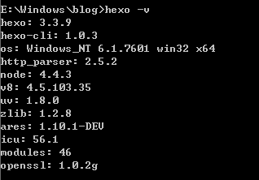
3.2 hexo初始化
- 继续在上面的命令行中完成hexo的初始化工作，若不慎关闭了窗口，则重新在blog目录下打开命令行，完成下面的操作
- 输入以下命令即可：
1.hexo init2.npm install
4.github配置
4.1创建新代码库
- 登录github官网注册帐号，已有则省略。
- 登录帐号，点击网页右上角+号，创建新代码库
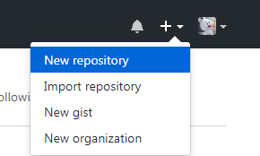 - 在Repository name填写
yourname,github.io，其他保持默认设置创建即可
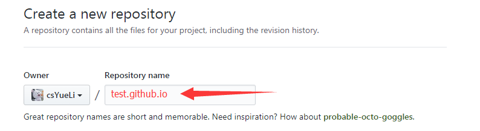4.2设置ssh登录
- 若不设置ssh，则向github提交代码需要使用用户名和密码，相对麻烦不安全
- 打开命令行，运行命令
ssh-keygen -t rsa -C "your_email@committermail.com"
上条命令中引号中的内容，需要根据自己的实际情况，更改为自己的邮箱地址 - 在生成公钥期间，会有提示让输入密码等操作，建议按默认无需输入任何信息，只需一路回车即可
- 完成后根据命令行中给出的密钥位置提示，这里我的命令行上提示密钥位置为
C:\Users\Administrator\.ssh，到指定位置找到id_rsa.pub文件，打开复制全部内容
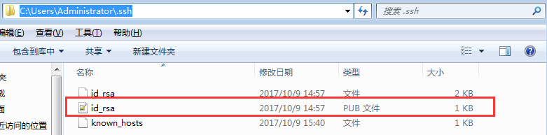 - 进入github帐号，点击网页右上角+号，选择Settings选项
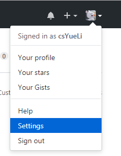 - 进入SSH and GPG Keys选项，点击New SSH Key，输入title，在Key中粘贴
id_rsa.pub中复制的内容即可，添加成功如下图所示
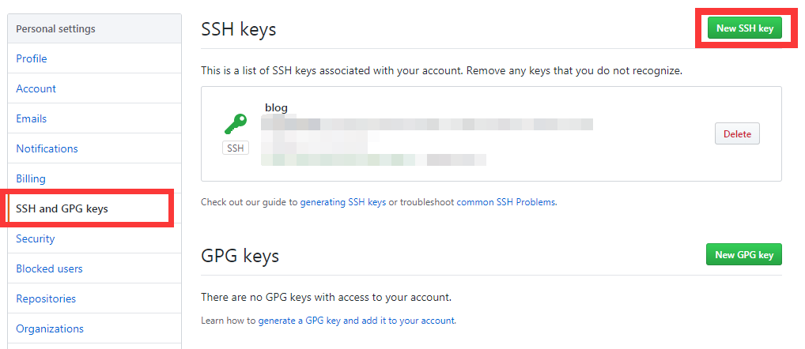 - 验证ssh是否配置成功，打开命令行，输入
ssh -T git@github.com - 验证期间若有“Are you sure you want to continue connecting (yes/no)?”的提示操作，输入“yes”，然后回车即可。若出现“Hi Willido! You’ve successfully authenticated, but GitHub does not provide shell access.”的信息，则表示已成功连上GitHub。
二、hexo体验
步骤一基本已经完成环境的筹备工作，下面简单介绍hexo设置
1.本地配置
- 进入blog文件夹，在当前目录下打开命令行
- 输入命令
hexo g
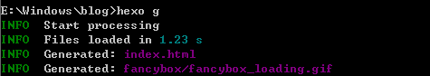
……
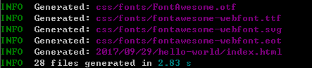 - 输入命令
hexo s -p 3600
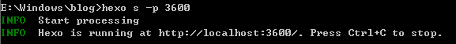 - 在浏览器中打开http://127.0.0.1:3600/，看到如下页面，hexo已经在本地成功配置
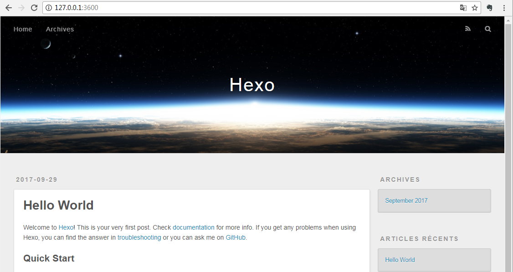
2.hexo+github
- 完成了上述hexo在本地的体验后，开始hexo+github搭建blog
- 进入blog目录，在当前目录下打开命令行，执行命令
hexo clean，清除上一步在本地所做的操作内容，命令行保留不关闭 - 打开blog目录下的文件_config.yml文件，对下面的内容做修改，并保存
1
2
3
4deploy:
type: git
repo: git@github.com:yourgithub/test.github.io.git
branch: master
repo中的yourgithub为申请的github帐号名，test为申请的repository name
执行命令
hexo g -d
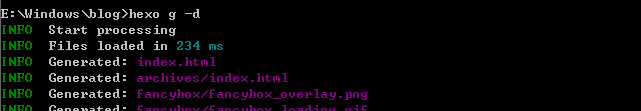
……
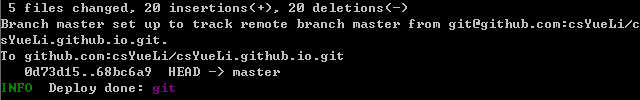在浏览器输入https://test.github.io，看到如下界面
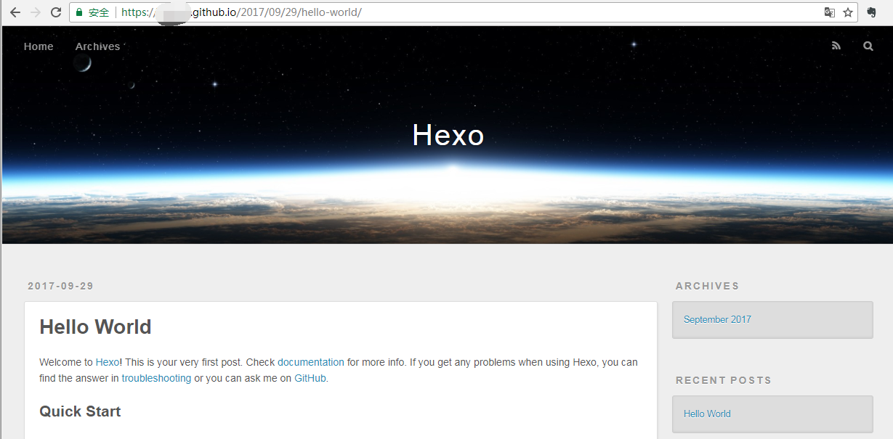
完成！
3.创建第一篇blog——hello world
- 在blog目录下，打开命令行
- 输入命令
hexo new XXX，XXX表示创建的文档名，这里设置为hello world - 打开blog目录下
blog->source->_posts可以看到生成如图文件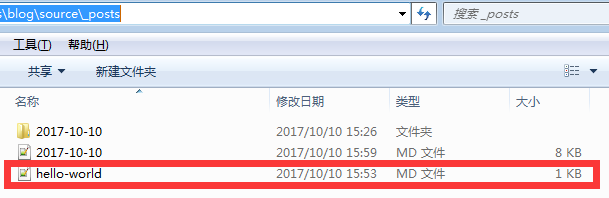 - 使用notepad++打开该文档（不推荐使用记事本等，编码可能会有问题）
- 利用MarkDown语法即可在该文档中愉快的书写了
- 完成文档书写后，在命令行输入
hexo g -d将文档上传
三、Q & A
Q1
Q1：localhost:4000访问本地blog无响应
A1：端口被占用，cmd 窗口执行命令hexo s -p 3600, 换一个 3600 的端口号
Q2
Q2： ‘ssh-keygen’ 不是内部或外部命令，也不是可运行的程序 或批处理文件。
A2：未找到ssh-keygen.exe文件，需要为ssh-keygen.exe配置环境变量。
- 新建系统变量Git_HOME，路径为git安装路径。点击计算机，右键属性->高级系统设置->环境变量->系统变量
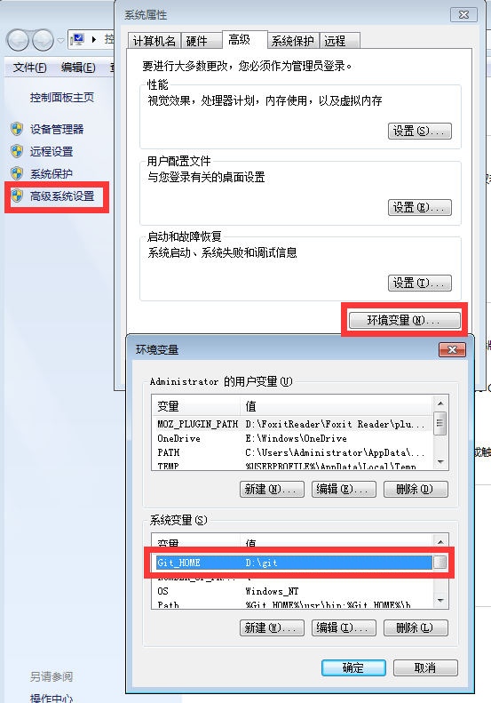 - 编辑系统变量Path，在最前方添加
%Git_HOME%\usr\bin;%Git_HOME%\bin;
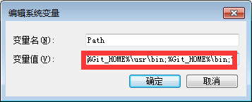
Q3
Q3：deploy 无法将内容发布到 github
A3：_config.yml文件设置有问题，配置repo的时候，没在冒号后面空格！！！一下 再输入配置。无法发布的问题基本是配置文件没有写正确，比如我傻乎乎的把几个参数的位置错位了一下，微笑：）
Q4
Q4：首页显示全文设置为显示部分。
A4：根据文章的内容，自己在合适的位置添加<!--more-->标签
Q5
Q5：hexo 中文乱码
A5：使用notepad++打开，选择菜单编码栏，转变为UTF-8编码，保存，执行hexo clean+hexo s -p 3600
Q6
Q6：hexo 添加图片不成功
A6：确认 _config.yml 中有 post_asset_folder:true